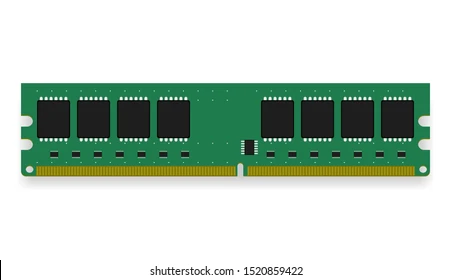
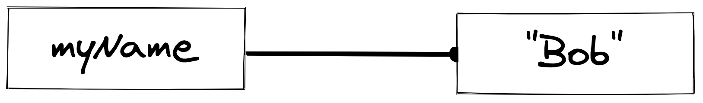
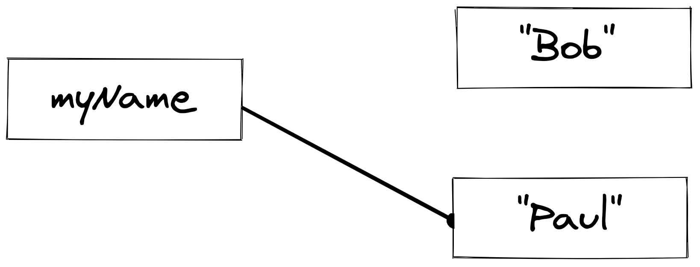
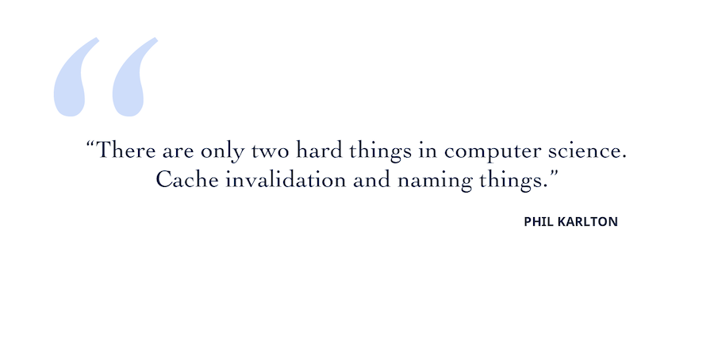

👩🏫 JS Basics 03 - Les variables
Objectifs
- Stocker des informations dans la mémoire de ton ordinateur en utilisant des variables.
- Comprendre les différents types de variables.
Pré-requis
Avoir validé les quêtes suivantes :
Introduction
Dans les précédentes quêtes, tu as découvert ce qu'était Javascript et ce à quoi la syntaxe ressemble. Maintenant. il est temps d'apprendre comment on peut stocker des informations dans la mémoire de l'ordinateur en utilisant les variables ! C'est parti !

Sommaire
Une vaquoi ?
Les variables permettent d'allouer un espace dans la mémoire vive, où on peut y stocker des données.
Pour créer une variable, on va utiliser le mot-clé let, suivi du nom de la variable, puis du symbole = et enfin de la valeur que l'on souhaite lui assigner.
let myName = "Bob";
console.log(myName);
// Will print "Bob"

Dans cet exemple, on crée la variable myName et on lui assigne la valeur "Bob".
On peut assigner à une variable, n'importe quel type de donnée ! String, Number, Object, Array, Function, etc.
let userAge = 30;
let fruits = ['apple', 'banana', 'kiwi'];
let userCar = {
model: "BMW",
year: "2000"
};
let sayMyName = function() {
console.log("My name is Bob!")
};
Nommer une variable
En JavaScript (et dans n'importe quel langage de programmation..!), on va chercher à nommer nos variables de la façon la plus claire possible. Ça ne va pas casser ton code, mais souviens-toi de ce qu'on disait dans les quêtes précédentes, on cherche à rendre notre code le plus lisible possible !
let a = "Bob"; // ❌ Bad !
let myName = "Bob"; // ✅ Good !
Les noms de variables peuvent contenir des lettres majuscule/minuscule (attention à la casse), des nombres, et les caractères spéciaux $ et _ .
Important
Une variable peut commencer par n'importe quoi sauf un nombre! let 1apple; ❌ error let apple1; ✅ good
On ne peut pas utiliser d'espace dans le nom d'une variable. Du coup, si on veut symboliser le-dit espace, on va utiliser la syntaxe camelCase 🐪. (Il existe aussi la syntaxe snake_case 🐍, mais elle est très peu utilisée en JS)
let userName = "Bob";
let userAge = 26;
let isLoggedIn = false;
Assigner une nouvelle valeur à une variable
Il est possible de réassigner une nouvelle valeur à une variable après sa création.
Par exemple, on peut réassigner à la variable myName une nouvelle valeur comme ceci:
let myName = "Bob";
console.log(myName);
// Will print "Bob"
myName = "Paul";
console.log(myName);
// Will print "Paul"
⚠️ Remarque bien que l'on ne réutilise pas le mot-clé
let.

Une variable n'est pas une valeur. C'est une étiquette pour accéder à une valeur. Aussi, la valeur (de type string) ne change pas elle-même. Ce qui change, c'est que la variable pointe vers une autre valeur (nouvellement créée).
🔬 Fais une expérience
Ouvre la console Javascript de ton navigateur. Essaie de créer la variable myName et de lui assigner une chaîne de caractères avec ton nom, en utilisant le mot-clé let.
Ensuite, assignes lui une nouvelle valeur.
Différents types de variables
En JavaScript, il y a différents types de variables. Historiquement, il n'était possible de créer une variable qu'avec var. Mais depuis quelques années (on te laisse chercher depuis quand !), deux autres types de variables sont devenus les standards.
Ils sont:
constlet
Tu devrais considérer le mot-clé var comme obsolète et éviter de l'utiliser.
Let
let représente une variable que l'on peut ré-assigner.
let myCity = "Paris";
myCity = "Berlin";
console.log(myCity);
// Berlin
Const
const représente une variable que l'on ne peut pas ré-assigner.
Tu dois l'utiliser dès que tu sais que la variable ne doit pas être réassignée.
Préfères utiliser const si tu as un doute.
const myName = "Bob";
myName = "John";
// TypeError: Assignment to constant variable.
Quand on essaie de ré-assigner la valeur de myName, on obtient un TypeError !
🔬 Fais une expérience
Ouvres la console de ton navigateur, et essaie de créer quelques variables en utilisant const et let.

Opérateurs d'incrément
En JavaScript, tu peux utiliser différents opérateurs pour incrémenter une variable :
- l'opérateur d'incrément
++pour augmenter la valeur de un : c'est un raccourci pour+= 1👇 - l'opérateur d'incrément
+=pour augmenter la valeur tout en assignant le résultat :a += 1est un raccourci poura = a + 1👇 - l'opérateur
+est l'opérateur "normal" pour faire une addition : celui que tu connais depuis toujours. L'opérateur+ne fait "que" une addition : pour stocker le résultat dans une variable, tu dois utiliser l'opérateur=dans ton instruction.
let myBudget = 0;
myBudget++;
console.log(myBudget); // affiche 1
myBudget += 2;
console.log(myBudget); // affiche 3
myBudget = myBudget + 1;
console.log(myBudget); // affiche 4
myBudget--;
console.log(myBudget); // affiche 3
myBudget -= 2;
console.log(myBudget); // affiche 1
myBudget = myBudget - 1;
console.log(myBudget); // affiche 0
Il est aussi possible de concaténer (ajouter bout à bout) des chaînes de caractères.
let hello = "Hello";
hello += ", World!";
console.log(hello);
// "Hello, World!"
Résumé
- En Javascript, on peut créer des variables qui pointent vers des valeurs.
- Il y a trois façons de créer des variables en JS
- let
- const
- var (déprécié)
letquand la valeur peut changer etconstpour les valeurs qui ne changent pas.
Une bonne ressource pour comprendre les variables
true|||true|||false
# Un nom de variable doit
[x] Etre explicite
[x] Utiliser le camelCase
[] Contenir des parenthèses
# Choisis les bonnes façons d'incrémenter en JS
[x] currentYear++;
[x] currentYear += 1;
[] const newYear = currentYear+++;
Challenge

Dans ce défi rapide, tu devras renommer précautionneusement toutes les variables et choisir le bon mot-clé (let/const) pour effectuer les déclarations.
Corrige ce code et poste ta version comme solution à ce défi quand tu as fini.
/*
🐦 DAVID Bruno Twitter profile 🐦
🏁 Please take this quick challenge and rename carefully all the variable, and fix this broken code by assigning the correct
variable keyword you have learned in the quest.
ex: const name = "David";
*/
const name = "David"; // ✅ Good!
lastname = "Bruno"; // ❌ the keyword to declare the variable is missing
let z = "Hi, I'm David Bruno from SF, I like to cook and meet new people."; // ❌ the variable name is not explicit. (this is David's biography)
1img = "http://www.go.com/davif.png"; // ❌ the variable name is not explicit and the keyword is missing (this is David's profile picture)
l = "San Francisco"; // ❌ the variable name is not explicit and the keyword is missing (try to guess what "San Francisco" could refer to)
followers = 109; // ❌ the keyword to declare the variable is missing
following = 200; // ❌ the keyword to declare the variable is missing
// 🏁 Exercise 02 - David is following one more account increment the total of following account
Critères d'acceptation
- [ ] Les noms des variables sont clairs et compréhensibles
- [ ] Le nombre de "following" a été incrémenté en utilisant la bonne méthode
Ressources partagées sur cette quête
- Les variables expliquer en Français.https://www.youtube.com/watch?v=L8yNc1xqAw8